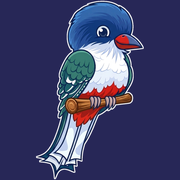
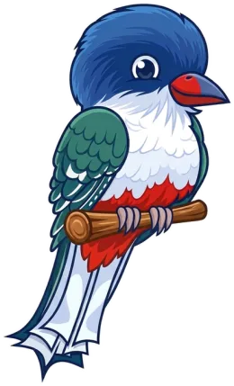
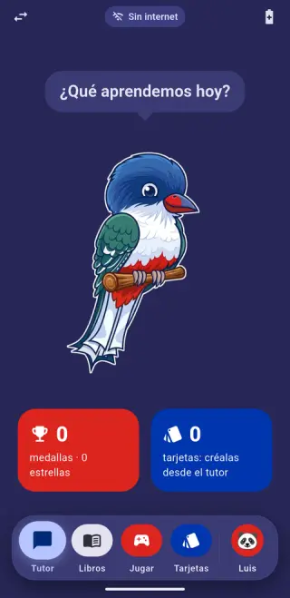
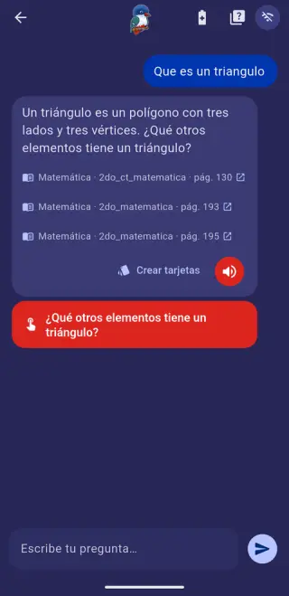
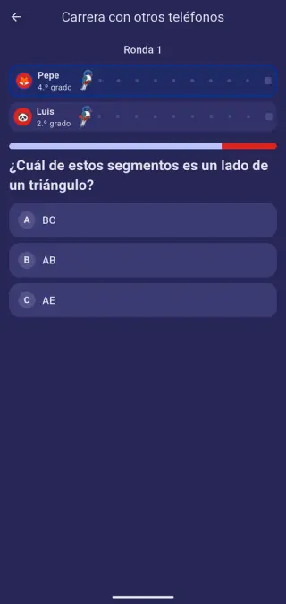

Pregunta y aprende paso a paso
Busca primero en los libros del grado del niño y responde en dos o tres frases. Si el libro no lo explica, lo dice y sugiere preguntar al maestro.

inocencIAPara niños de 1.º a 6.º grado
El niño pregunta lo que no entiende de su libro. Toco le explica con las palabras del libro cubano de su grado, le dice en qué página está y le hace pensar el siguiente paso.

Que es un triangulo
Un triángulo es un polígono con tres lados y tres vértices. ¿Qué otros elementos tiene un triángulo?
Matemática · 2.º grado · pág. 193
¿Qué otros elementos tiene un triángulo?
Respuesta real de la app en un teléfono sin conexión. El niño contesta con un toque.
Busca primero en los libros del grado del niño y responde en dos o tres frases. Si el libro no lo explica, lo dice y sugiere preguntar al maestro.
Los libros en PDF de su grado. Cada uno se abre en la página donde se quedó, y desde una respuesta se salta a la página citada.
Tarjetas de memoria creadas a partir de lo que preguntó y quizzes de tres preguntas que dan estrellas y medallas.
Hasta 6 niños, cada uno en su teléfono, conectados por el punto de acceso Wi-Fi de uno de ellos. Cada uno responde preguntas de su propio grado.
Nombre, avatar y grado, que sube solo con los años. El historial, las medallas y la página de lectura son de cada uno.
Con un PIN: perfiles, archivos, avisos diarios para estudiar, voz, Pomodoro y modo batería para los apagones.



La inteligencia artificial está dentro de la app. No hay servidor al que mandar las preguntas del niño.
Después no hace falta internet. Necesitas cuatro archivos: la app, el modelo de IA, la base de libros y los libros en PDF del grado de tus niños.
El archivo inocencIA-…-arm64-v8a.apk sirve para casi todos los teléfonos. El de armeabi-v7a es para teléfonos viejos de 32 bits.
Android preguntará si permites instalar apps de origen desconocido. Acéptalo para el navegador, Telegram o el gestor de archivos.
Ábrela una vez y copia el modelo .gguf y knowledge.db a Android/data/com.inocencia.app/files/.
Pon tu PIN de padre o madre, crea un perfil para cada niño y listo.
| RAM del teléfono | Modelo | Tamaño |
|---|---|---|
| 8 GB o más | qwen2.5-3b-instruct-q4_0 Recomendado | ≈ 2,0 GB |
| Menos de 8 GB | qwen2.5-1.5b-instruct-q4_k_mMás rápido, se equivoca más | ≈ 1,1 GB |
| Cualquiera | qwen2.5-7b-instruct-q4_k_m No recomendadoTarda más de un minuto en empezar | ≈ 4,7 GB |
¿No sabes cuánta RAM tiene? Instala la app y entra en Zona de padres → Archivos: te dice qué modelo le conviene a ese teléfono y si el archivo es el oficial.
Desde Zona de padres → Archivos se comparten la app, el modelo y los libros por ShareIt, Zapya o Bluetooth, o se copian a una memoria SD. Basta con que una persona la descargue, y las demás la reciben sin gastar datos.
Con el modelo recomendado, unos 20 a 40 segundos en empezar a escribir, según el teléfono. Todo se calcula dentro del teléfono. Mientras piensa se puede salir de la app o apagar la pantalla; un aviso dice cuándo terminó.
No. Es gratis, sin anuncios ni compras dentro de la app. El código es abierto (licencia Apache 2.0).
No. Ante un ejercicio no da la solución: pide el primer paso, valora lo que el niño contesta y corrige con suavidad.
Android 10 o superior. Con 8 GB de RAM va el modelo recomendado; con menos, el modelo pequeño. Funciona también en tablets.
Junto a cada versión se publica la suma SHA-256 de los APK. Además, la app avisa en Zona de padres → Archivos si el modelo o la base de libros no coinciden con los publicados.
Sí: instala el APK nuevo encima del anterior, sin desinstalar. Desinstalar borra los perfiles, el historial y las medallas.